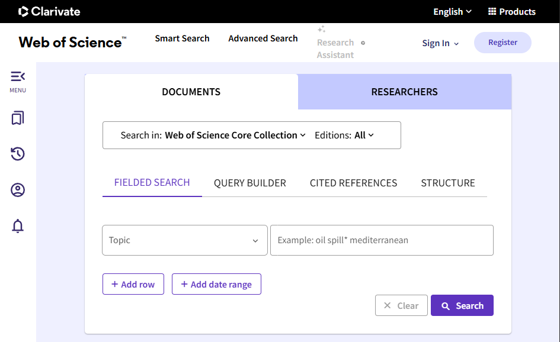
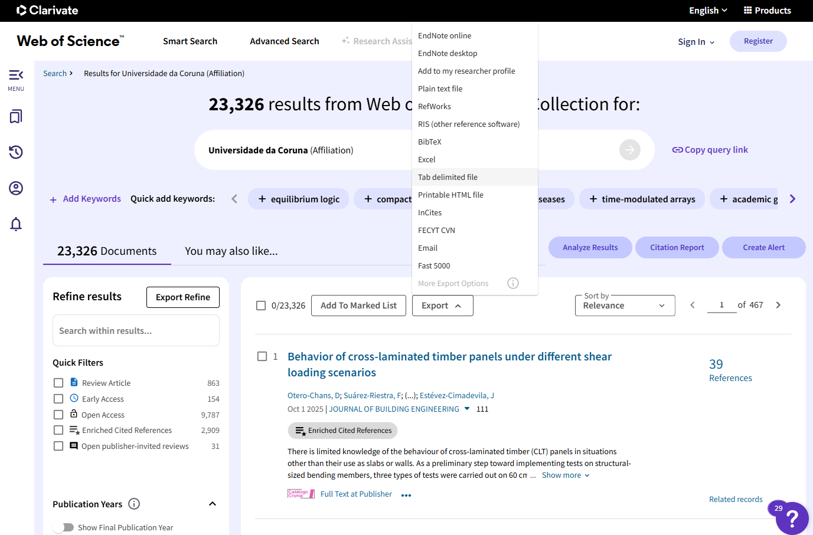
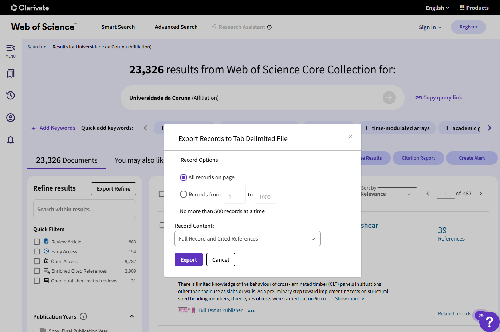

Downloading data from the Web of Science
UDC Ranking’s Group
2025-11-22
Source:vignettes/WoS_export.Rmd
WoS_export.RmdNote that a subscription is required to import data from Web of Science.
Access the Clarivate Web of Science (WoS) search web page: https://www.webofscience.com/wos (or through your institutional access link; for instance https://www.recursoscientificos.fecyt.es from the Spanish Foundation for Science and Technology, FECYT Consortium Academic Group).
Select the Web of Science Core Collection database in the top dropdown menu and choose the desired options:
Editions: this dropdown menu can be used to select the citation indexes (For example, if following the IUNE criteria, you would select the first three).
Add date range: limit the results to a specific period.
Add row: include additional search criteria.
-
Query Builder: build more complex queries using field tags and Boolean operators.
Note: Visit the online training portal for details: https://clarivate.com/webofsciencegroup/support/wos/.

Set the search fields and click on Search.
If you want to download the scientific output linked to a university, you can use the Affiliation field (OG in Advanced Search). You can search for the specific name as you start typing in the search field. The names of the universities that make up the Galician University System (SUG) are:
UDC: Universidade da Coruna.
USC: Universidade de Santiago de Compostela.
UVIGO: Universidade de Vigo.
Additionally, you can specify a year range.
Once you obtain the results list, select Export and Tab delimited file (you will need to repeat this if the number of records exceeds 500, which is the default download limit).

In the pop-up window, set the record range (considering the 500-record limit and that, in the last step, you will have to enter the exact total number of records in the upper limit), and make sure to select Full Record and Cited References in the Record Content field.

When you click Export, a text file (savedrecs.txt by default) containing the publication data will be downloaded. It is recommended to save these files in a subdirectory, renaming them appropriately.